Economía Internacional — Clase 6
Prebisch y centro-periferia (CEPAL)
21 de mayo de 2026
UMET - Licenciatura en Economía | 2026
Lo que dejamos en la Clase 5
Unidad 3 cerrada — hoy cambiamos de tradición teórica
- Krugman, Vernon, Melitz, dumping y comercio de tareas: el marco de las Nuevas Teorías del Comercio
- Tradición común: comercio entre países similares, con escala, variedades, firmas heterogéneas
- Conclusión central: comercio = fuente de ganancias mutuas (con ganadores y perdedores internos, pero ganancia agregada)
- Hoy cambiamos de tradición: del marco anglosajón (Ricardo → Krugman → Melitz) al estructuralismo latinoamericano
- La pregunta cambia: ya no es "¿por qué comerciamos?" sino "¿quién gana, quién pierde, y por qué unos países se desarrollan y otros no?"
¿Qué vamos a ver hoy?
- Bloque 1 — Crisis de la teoría clásica: ¿por qué Ricardo y H-O no explican lo que pasó con América Latina?
- Bloque 2 — Prebisch y centro-periferia: la tesis del deterioro de los términos del intercambio y sus mecanismos
- Bloque 3 — Estrategia ISI: industrialización por sustitución, instrumentos, restricción externa argentina (Diamand)
- Bloque 4 — Críticas y actualidad: evidencia mixta, reprimarización, CGV y nueva centro-periferia
- Cierre: lecturas U4, guía de lectura, próxima clase
¿Qué pasó con América Latina después de 1929?
Video disparador — la tesis Prebisch-Singer

▶ Abrir en YouTube
⏸ Pausar el video en
4:30
- Crisis del 29: cae el valor de las exportaciones primarias, AL pierde ingresos fiscales
- Tesis Prebisch-Singer: los precios de materias primas caen vs los de manufacturas → deterioro de los términos del intercambio
- Tres mecanismos del deterioro:
- Elasticidad de la demanda: la demanda de manufacturas crece más que la de primarios cuando sube el ingreso
- Competencia entre productores: más países compiten en commodities, tira el precio para abajo
- Cambio técnico: los primarios son reemplazados por sintéticos
- Implicancia política: la periferia tiene que industrializarse y necesita un Estado activo
Bloque 1 — Crisis de la teoría clásica
Si Ricardo y H-O tenían razón, ¿por qué AL no se desarrolló?
La paradoja
- ...¿por qué algunos países comercian durante un siglo y NO se desarrollan?
- ...¿por qué otros países, que en los 50 eran más pobres que Argentina, hoy son potencias industriales?
- ...¿por qué Argentina, Brasil y México siguen exportando lo MISMO que exportaban en 1900 (carnes, granos, minerales)?
- La teoría clásica no responde estas preguntas.
- Prebisch va a proponer una respuesta estructural: el comercio NO es neutral.
Lo que nos enseñó la teoría clásica
Repaso rápido antes de cuestionarla
- Ricardo (1817): ventaja comparativa → cada país se especializa en lo que produce con menor costo de oportunidad
- Heckscher-Ohlin (1933): las ventajas vienen de las dotaciones factoriales (tierra, trabajo, capital)
- Conclusión (ambos): la especialización es eficiente y el comercio genera ganancias mutuas
- Implicancia política: si tu país tiene mucha tierra (Argentina), especializate en agro. Si tiene mucho trabajo barato (Bangladesh), especializate en textiles.
- El comercio nivela: los países que comercian deberían converger en sus niveles de ingreso (modelos posteriores: Solow, equalización de precios de factores)
- Esta es la lógica que Prebisch va a cuestionar.
La gran divergencia: PIB per cápita 1950-2018
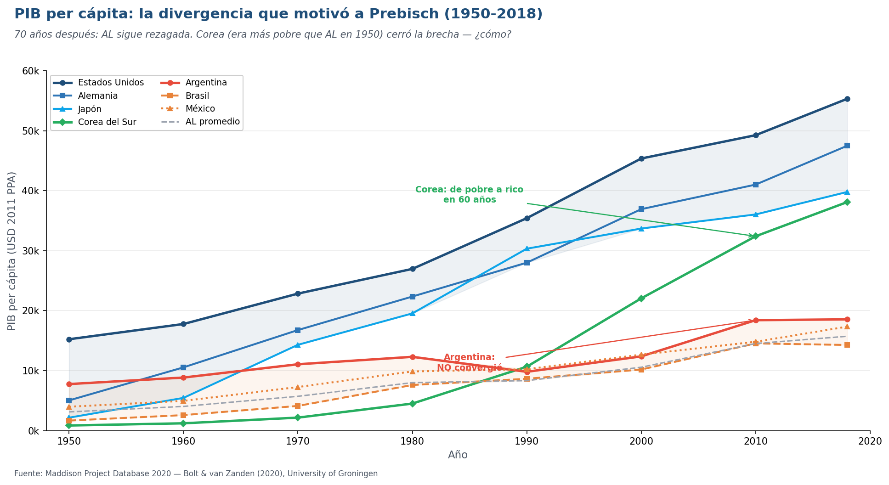
Fuente: Maddison Project Database 2020 — Bolt & van Zanden (2020)
- Predicción de la teoría clásica: el comercio iguala (lentamente) los niveles de ingreso
- Realidad: Argentina pasó de 7.762 USD (1950) a 18.556 USD (2018). Solo 2,4× en 70 años
- Corea del Sur: pasó de 854 USD (más pobre que Bolivia) a 38.110 USD en 2018. 44× en 70 años
- EEUU pasó de 15.240 a 55.335 USD: brecha con Argentina se agrandó, no se cerró
- ¿Qué hicieron distinto Corea, Japón y Alemania? Cambiaron lo que producían. Argentina no.
- Esto es el "hecho estilizado" central que motivó la teoría estructuralista
Si comerciar fuera neutral, los precios relativos no deberían tener tendencia
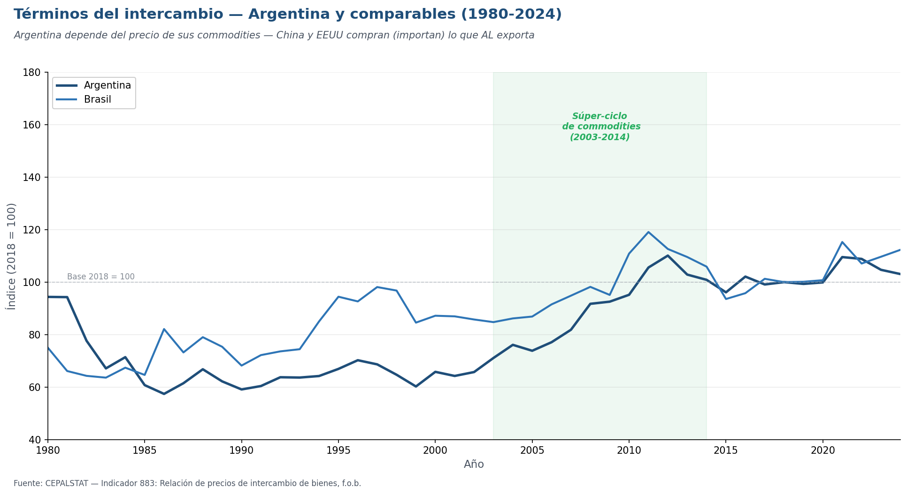
Fuente: CEPALSTAT — Indicador 883: Relación de precios de intercambio de bienes, f.o.b. (base 2018=100)
- Términos del intercambio = precio de lo que exportás / precio de lo que importás
- Si suben: con la misma exportación, podés importar más → ganás
- Si caen: necesitás exportar más para importar lo mismo → perdés
- Argentina y Brasil: cayeron 40-50% en los 80-90s (la "década perdida"), recuperaron con el súper-ciclo de commodities (2003-2014), bajaron después
- La intuición de Prebisch ya en 1949: los TdI de los exportadores de commodities tienden a caer en el largo plazo
- En los 70 años desde Prebisch, la evidencia es más mixta — pero el problema sigue siendo central
- Si Prebisch tiene aunque sea parcialmente razón → el comercio NO es neutral
Bloque 2 — Prebisch y centro-periferia
La teoría que conectó los dos hechos empíricos del Bloque 1
Raúl Prebisch — el economista que cuestionó a Ricardo desde el Sur
- Argentino (Tucumán, 1901). Estudió economía en la UBA
- Director del Banco Central de la República Argentina (1935-1943) — el primer BCRA fue creado por él
- Primer Secretario Ejecutivo de la CEPAL (1950-1963) — desde Santiago de Chile escribió su tesis fundacional
- Primer Secretario General de la UNCTAD (1964-1969) — llevó la agenda estructuralista al sistema de la ONU
- Obra clave: "El desarrollo económico de América Latina y algunos de sus principales problemas" (1949) — conocido como El Manifiesto Latinoamericano
- Pensador "tardío" — toda su obra teórica empezó después de los 50 años, basada en su experiencia práctica como funcionario
El mundo dividido en dos posiciones estructurales
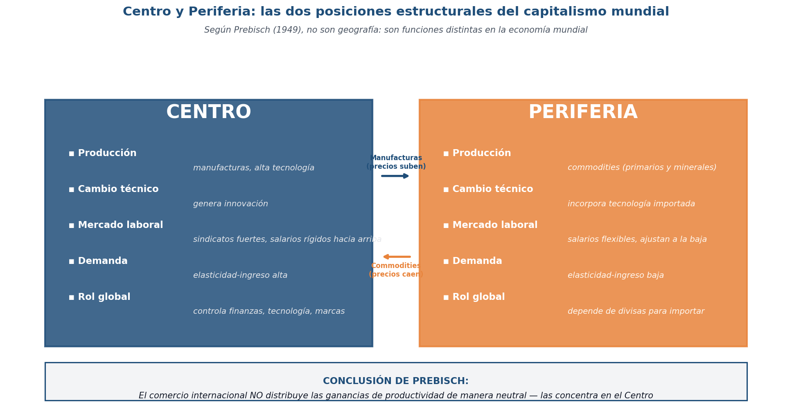
- Centro y Periferia NO son categorías geográficas ni morales
- Son posiciones estructurales dentro del capitalismo mundial — dos formas distintas de participar en la economía global
- Centro: produce manufacturas, genera innovación, controla finanzas y marcas, sindicatos fuertes
- Periferia: produce commodities, importa tecnología, salarios flexibles, depende de divisas
- Resultado clave: el centro retiene las ganancias de productividad, la periferia las transfiere vía precios bajos
- Esta asimetría es estructural: persiste aunque cambien los gobiernos, las políticas o los regímenes económicos
33 años después: ¿cambió la estructura exportadora de AL?
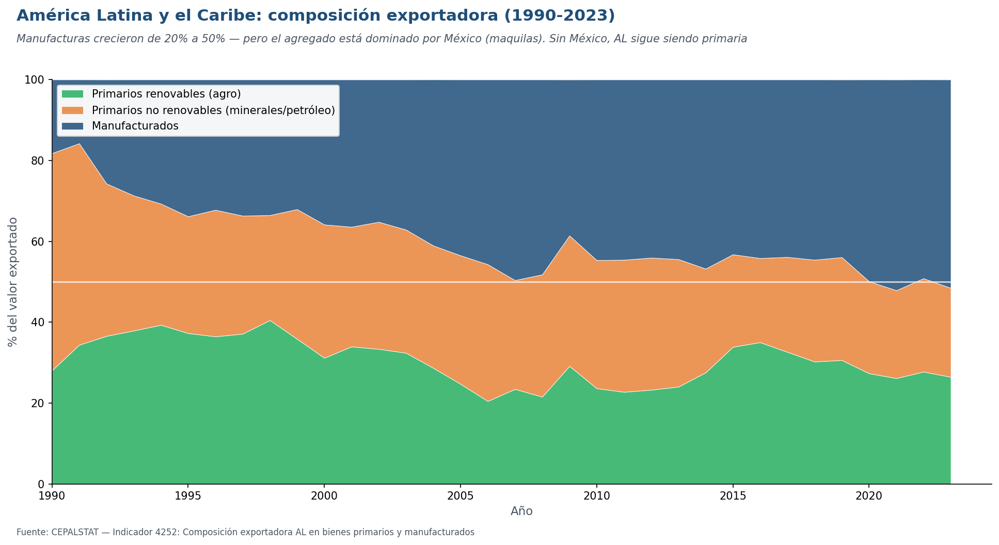
Fuente: CEPALSTAT — Indicador 4252: Composición exportadora América Latina
- AL en 1990: 80% primarios + 20% manufacturas
- AL en 2023: 50% primarios + 50% manufacturas — mejoró aparentemente
- PERO: el dato regional incluye a México, que exporta mayoritariamente manufacturas (maquilas con NAFTA/T-MEC)
- Sin México, AL sigue siendo claramente primaria (~70% commodities)
- Argentina, Brasil, Chile, Perú: exportadores de soja, mineral de hierro, cobre, plata, petróleo, carne — lo mismo que en 1900
- El "patrón estructural" sigue 75 años después de Prebisch — solo México y algunos países con NAFTA rompieron la regla
Primer mecanismo del deterioro: la demanda no crece igual
Por qué los precios de commodities suben menos que los de manufacturas
- Elasticidad-ingreso de la demanda: cuánto crece la demanda de un bien cuando crece el ingreso
- Primarios (alimentos, materias primas): elasticidad BAJA (~0,3-0,6) — la familia no duplica su consumo de café o soja si gana el doble (techo biológico)
- Manufacturas y servicios: elasticidad ALTA (~1,2-2,5) — sí compra más electrónica, autos, viajes
- Resultado mundial: cuando crece la economía global, la demanda de manufacturas crece más rápido que la de commodities
- Implicancia de precios: los precios de manufacturas suben más que los de commodities → caída de los términos del intercambio para la periferia
- Esta tendencia se conoce como la Ley de Engel aplicada al comercio internacional
Segundo mecanismo: cómo se distribuyen las ganancias de productividad
Por qué en el centro suben los salarios y en la periferia bajan los precios
- En el centro: cuando aumenta la productividad de la industria, los sindicatos fuertes logran que los salarios suban en proporción
- Resultado: la ganancia de productividad queda dentro del centro (vía salarios + ganancias empresariales)
- En la periferia: cuando aumenta la productividad agrícola, los salarios NO suben (mercado laboral flexible, exceso de oferta rural)
- Resultado: la ganancia de productividad se traslada al precio (que cae) → beneficia al comprador extranjero, no al productor local
- Asimetría clave: mismo aumento de productividad, distinto destino de las ganancias
- En el centro: trabajadores y empresarios capturan productividad
- En la periferia: consumidores extranjeros (del centro) capturan productividad
La conclusión política de Prebisch
- El comercio internacional NO es un mecanismo neutral que distribuye igualitariamente las ganancias del progreso técnico
- Por la combinación de elasticidades (mecanismo 1) y mercado laboral asimétrico (mecanismo 2), el comercio transfiere valor del Sur al Norte
- Esta transferencia es estructural — no depende de la malicia de nadie ni del régimen político
- La periferia exporta lo que produce, importa lo que necesita, y financia lo que le falta
- Implicancia política: si la teoría clásica recomienda especializarse según ventaja comparativa, Prebisch recomienda CAMBIAR LA ESTRUCTURA
- Esa será la estrategia ISI — el tema del Bloque 3
Bloque 3 — Estrategia ISI
Si la estructura del comercio reproduce la desigualdad — hay que cambiar la estructura
La estrategia ISI: industrializar para escapar de la periferia
Industrialización por Sustitución de Importaciones (1930-1976 en AL)
- Diagnóstico: la periferia transfiere ganancias de productividad al centro vía precios bajos de commodities
- Solución de CEPAL: cambiar la estructura productiva — producir internamente lo que antes se importaba
- Por qué "sustitución de importaciones": AL ya tenía mercado para esos bienes (los importaba). Producirlos localmente protege divisas y crea industria + empleo + capacidades
- No es autarquía — sigue habiendo comercio (commodities afuera, manufacturas adentro), pero el país captura las ganancias de productividad de su propia industrialización
- La idea pedagógica clave: aprender haciendo (learning by doing). La industria local arranca subóptima — pero con tiempo, gana escala, aprende, mejora
- Por eso necesita protección temporal: la "industria infantil" no puede competir con la maduración del centro hasta que aprenda. Después se abre.
Industrializar progresivamente, etapa por etapa
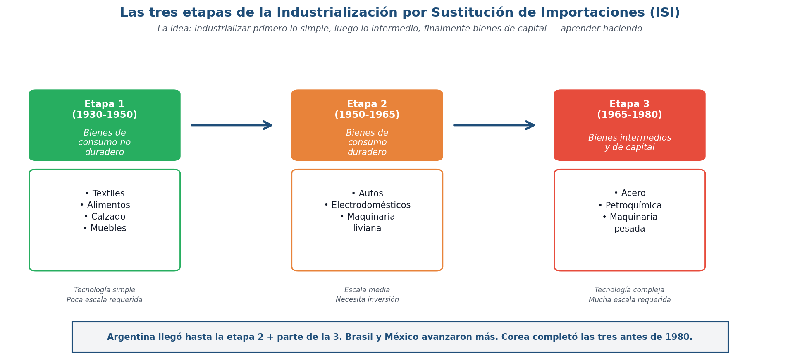
Fuente: Síntesis basada en Prebisch (1949), Lugones cap 5, Cimoli & Porcile (2014)
- Etapa 1 (1930-1950): bienes de consumo no duradero — textiles, alimentos, calzado, muebles. Tecnología simple
- Etapa 2 (1950-1965): bienes de consumo duradero — autos, electrodomésticos, maquinaria liviana. Escala media, necesita inversión
- Etapa 3 (1965-1980): bienes intermedios y de capital — acero, petroquímica, maquinaria pesada. Tecnología compleja, mucha escala
- El "salto" más difícil es de Etapa 2 a Etapa 3: requiere capacidades técnicas, capital y escala que no se acumulan automáticamente
- Argentina: llegó a Etapa 2 + parte de Etapa 3 (Atucha, SOMISA, Alpargatas, IKA-Renault). Brasil y México: avanzaron más
- Corea, Taiwán: completaron las 3 etapas + saltaron a electrónica avanzada antes del 2000 — el "milagro asiático"
PIB per cápita Argentina 1900-2018: tres modelos económicos
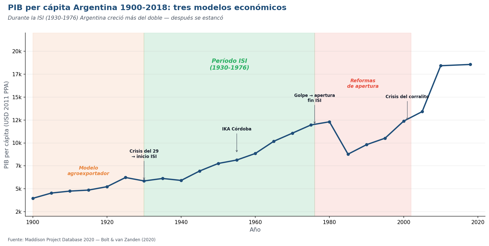
Fuente: Maddison Project Database 2020
- 1900-1930 — Modelo agroexportador: crecimiento moderado, PIB pc pasa de USD 4.000 a USD 6.000 (50%)
- 1930-1976 — Período ISI: crecimiento sostenido, PIB pc pasa de USD 6.000 a USD 12.000 (100% en 46 años)
- 1976-2002 — Apertura y reformas: estancamiento + crisis. PIB pc oscila entre USD 9.000 y 13.000 sin tendencia clara al alza
- 2002-2018 — Post-convertibilidad + soja: recuperación pero sin convergencia. PIB pc llega a USD 18.500 (gracias al boom de commodities)
- Hitos clave: Crisis 29 → inicio ISI; IKA Córdoba 1955; Golpe 1976 → fin ISI + apertura; Crisis 2001
- Conclusión empírica argentina: durante la ISI, Argentina creció el doble. Después se estancó. Eso pone un piso al debate sobre la ISI.
Marcelo Diamand: la teoría argentina sobre nuestro propio problema
Por qué la economía argentina entra en crisis cada vez que crece
- Marcelo Diamand (1927-1995): economista argentino, ingeniero, empresario industrial. Discípulo de Prebisch pero con enfoque más argentino
- Tesis central (1972): la economía argentina tiene una "estructura productiva desequilibrada" (EPD)
- Hay dos sectores con productividades MUY distintas: el sector agropecuario (alta productividad mundial) y la industria (baja productividad mundial)
- El agro genera divisas eficientemente. La industria depende de importar insumos pero NO genera divisas suficientes
- Implicancia para tipo de cambio: con un solo tipo de cambio, es imposible favorecer simultáneamente a los dos sectores
- TC alto (devaluado): bueno para industria, pero genera inflación porque encarece las importaciones que la industria necesita
- TC bajo (apreciado): mata la industria pero abarata insumos importados (efímeramente)
- Solución de Diamand: tipo de cambio múltiple o retenciones — un instrumento dual
Por qué la economía argentina entra en crisis cada vez que crece
La restricción externa como mecanismo recurrente — avanzá paso a paso
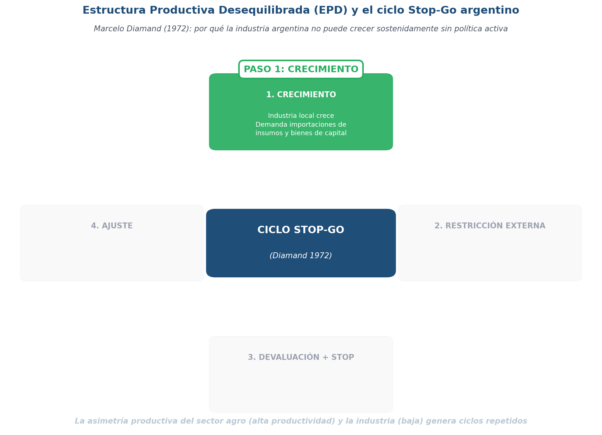
Fuente: Esquema conceptual basado en Diamand (1972) "La estructura productiva desequilibrada argentina y el tipo de cambio"
- Fase 1 — Crecimiento: la industria se expande
- Demanda más insumos importados y bienes de capital (maquinaria, autopartes, químicos)
- El consumo también crece y demanda importaciones
- Pero la industria argentina no genera divisas suficientes — las divisas las pone el agro
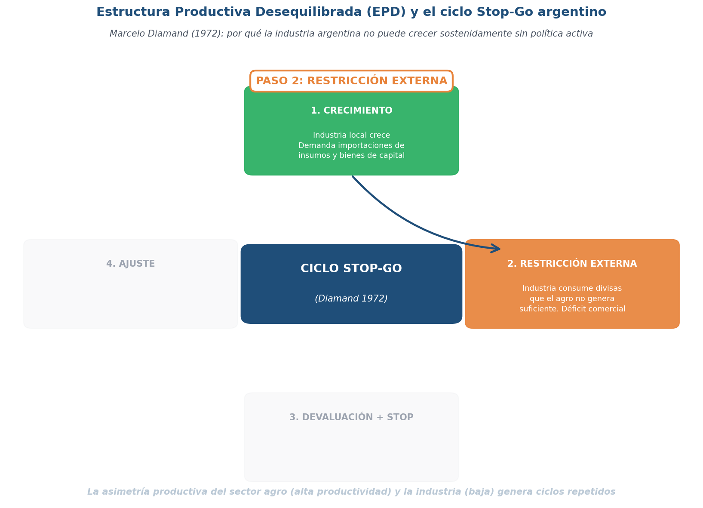
Fuente: Esquema conceptual basado en Diamand (1972) "La estructura productiva desequilibrada argentina y el tipo de cambio"
- Fase 2 — Restricción externa: aparece el cuello de botella
- Las importaciones que demanda la industria > exportaciones del agro
- Déficit comercial y caen las reservas del BCRA
- La economía no puede crecer más allá de cierto punto sin perder reservas (bottleneck externo)
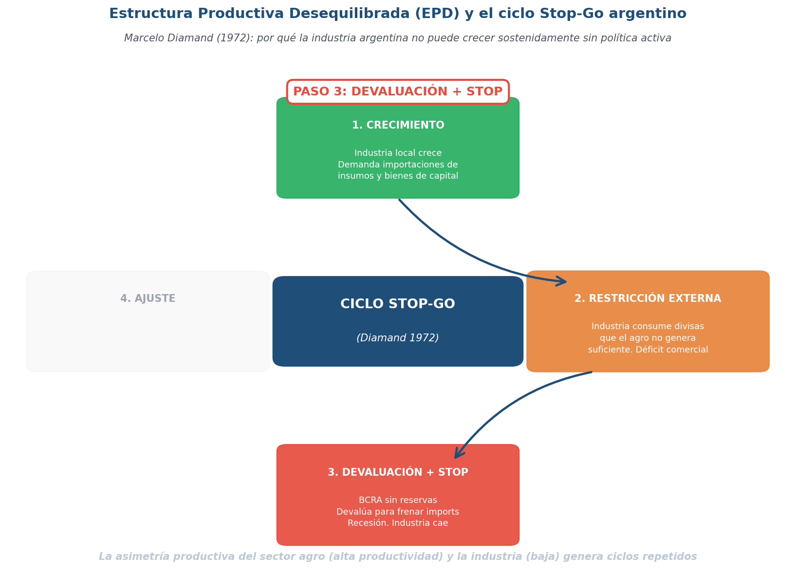
Fuente: Esquema conceptual basado en Diamand (1972) "La estructura productiva desequilibrada argentina y el tipo de cambio"
- Fase 3 — Devaluación + STOP: el BCRA se queda sin reservas y devalúa
- Las importaciones se encarecen → la industria se frena (depende de insumos importados)
- Suben los precios, caen los salarios reales, cae el consumo
- Recesión: eso es el "STOP" del ciclo
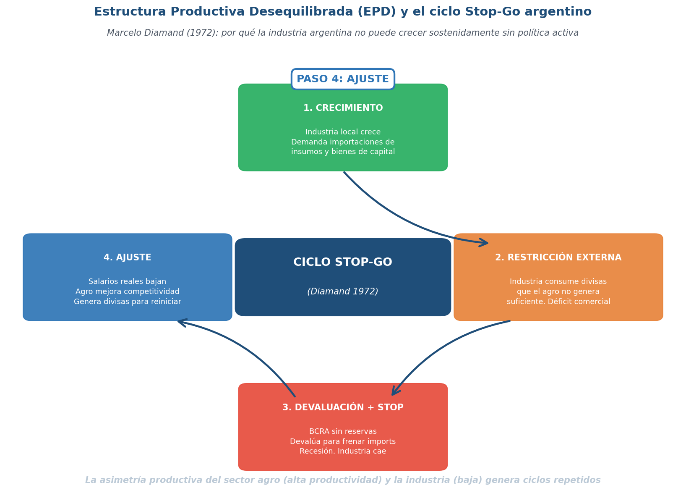
Fuente: Esquema conceptual basado en Diamand (1972) "La estructura productiva desequilibrada argentina y el tipo de cambio"
- Fase 4 — Ajuste: el peso devaluado vuelve rentables las exportaciones del agro
- El agro factura mucho, pero esos pesos no se reinvierten en industria (van a activos financieros, dólares, tierra)
- Salarios reales bajos vuelven "competitiva" la mano de obra → entran divisas de nuevo
- Se sale de la recesión
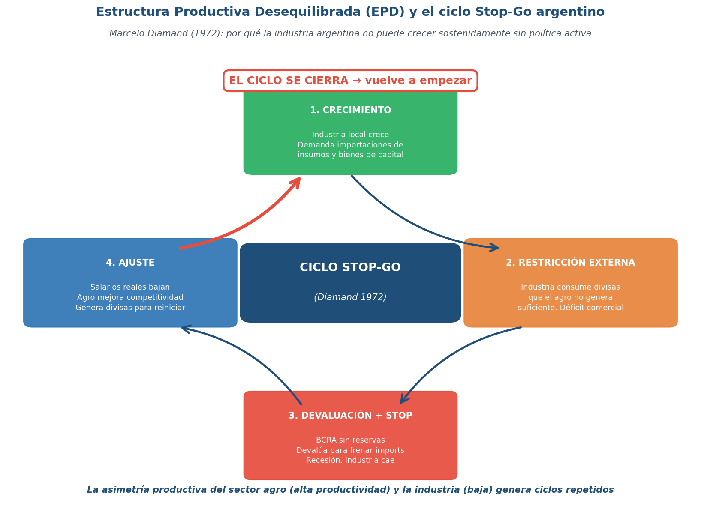
Fuente: Esquema conceptual basado en Diamand (1972) "La estructura productiva desequilibrada argentina y el tipo de cambio"
- El ciclo se cierra y vuelve a empezar — cada 5 a 7 años
- Argentina arquetípica: 1948-52, 1958-62, 1973-75, 1980-82, 1991-95, 2008-10, 2015-18, 2022-24
- La causa de fondo según Diamand: la EPD (estructura productiva desequilibrada)
- Solución estructural: completar la industrialización para que la industria también genere divisas — eso es lo que no se logró
Paso 1 / 5
Bloque 4 — Críticas y actualidad
¿La tesis Prebisch-Singer resiste 75 años de evidencia? ¿Qué dice el siglo XXI?
¿Tenía razón Prebisch? — Críticas técnicas y empíricas
Volvemos al video (segunda parte): los datos en discusión
▶ Abrir en YouTube
⏸ Pausar el video en
9:00
- Crítica 1 — Calidad de los datos: el índice original de Prebisch usaba precios británicos de importación/exportación. Sesgos por costos de transporte y por mejora de calidad de manufacturas (Viner 1953)
- Crítica 2 — Resultados sensibles al período: la caída de los TdI depende fuerte de dónde empieza y dónde termina la serie
- Crítica 3 — Commodity supercycles: hay subas y bajas largas (Erten & Ocampo 2013) — no es solo tendencia
- Pero: estudios modernos (Harvey et al. 2010, cuatro siglos de evidencia) en general confirman una caída tendencial, aunque más leve de lo que decía Prebisch
La tesis tras 75 años: ¿qué sobrevivió y qué fue refutado?
Tres críticas — y por qué ninguna la tumba del todo
- Crítica 1 — Los datos eran malos (Viner 1953, Spraos 1980): el índice de Prebisch tenía sesgos por costos de transporte y mejoras de calidad → al corregir, la caída se reduce ~50% pero no desaparece
- Crítica 2 — El commodity boom 2003-2014 parecía romper la tesis: precios récord de soja, hierro, cobre, petróleo por demanda china → falsa alarma: post-2014 los precios volvieron a caer
- Crítica 3 — Lo que importa NO es el precio, es la productividad (Singer): aún si los precios fueran neutrales, las ganancias de productividad se quedan en el centro por estructuras institucionales (sindicatos fuertes, mark-ups) — esto no se refuta con datos de precios
- Lo que sí sigue siendo cierto: la volatilidad de los TdI primarios es mucho mayor que la de manufacturas → la periferia carga con la incertidumbre macro
- Síntesis (Ocampo 2022): Prebisch no estaba todo el tiempo en lo correcto, pero su intuición central — qué exportás importa — fue confirmada por la literatura moderna (Hausmann-Hwang-Rodrik 2007, Hidalgo-Hausmann 2009)
La maldición de China — la subida de los primarios 2003-2014
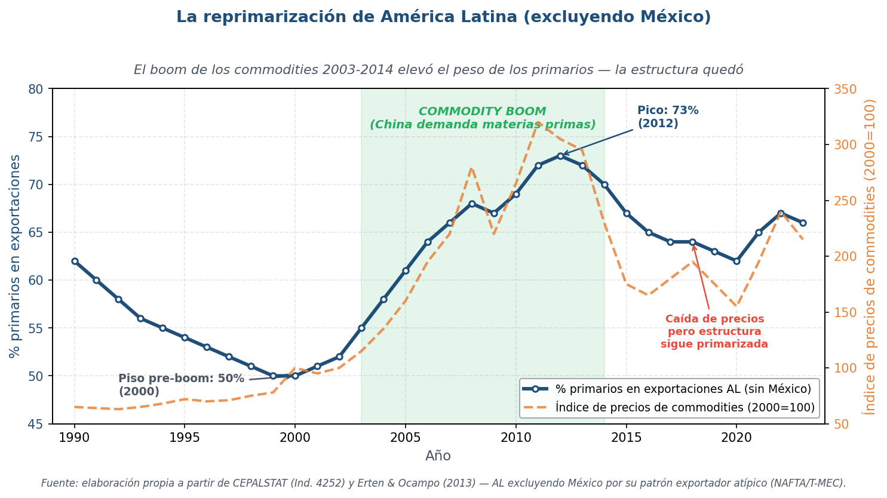
Fuente: Elaboración propia a partir de CEPALSTAT (Indicador 4252) y Erten & Ocampo (2013)
- AL excluyendo México: % primarios en exportaciones sube de ~55% en 2000 a ~70% en 2013 (boom de la soja, el hierro y el cobre)
- Argentina: la soja pasó del 8% al 25% de las exportaciones entre 2002 y 2012
- Brasil: el hierro y la soja desplazaron manufacturas — su industria pierde peso (Rodrik habla de premature deindustrialization)
- El boom hizo competitiva la primarización — términos del intercambio favorables disuadieron de industrializar (lo opuesto de lo que Prebisch recomendaba)
- Post-2014: el ciclo se cierra, precios caen, déficit comercial vuelve, pero la estructura primarizada ya está consolidada
- Paradoja: la región creció (PIB +50% 2003-2013) pero su estructura productiva retrocedió a la de 1900
La división Norte-Sur del siglo XXI: capacidades, no commodities
Lo que separa al centro de la periferia ya no son los productos, son las capacidades
- Cimoli & Porcile (2014): la frontera centro-periferia se desplazó — ya no es "exportar manufacturas vs commodities", es qué tipo de manufacturas y qué capacidades subyacen
- Centro: dueño de patentes, diseña productos, controla I+D — EEUU, UE, Japón, Corea (entró al club post-1990)
- Periferia: ensambla productos diseñados afuera, paga regalías por patentes, importa bienes de capital — AL, África, gran parte de Asia
- El verdadero indicador hoy: % de exportaciones de alta tecnología (HT), patentes per cápita, complejidad económica (ECI de Hidalgo-Hausmann)
- Argentina, Brasil, Chile, México: HT < 10% de exportaciones, ECI negativo (debajo del promedio mundial)
- Corea, Alemania, Japón, Singapur: HT > 25%, ECI muy positivo
- La paradoja del agro argentino: exporta soja con tecnología moderna (no-till, GPS, semillas transgénicas) pero la tecnología se importa — Argentina paga regalías a Monsanto, no las cobra
El centro diseña, la periferia ensambla
Cadenas globales de valor: ¿oportunidad de upgrading o nueva forma de dependencia?
- En el siglo XXI, la producción se fragmentó en cadenas globales de valor (CGV): cada eslabón se localiza donde es más rentable
- Patrón típico de las CGV:
- Diseño + I+D: centro (EEUU, UE, Japón, Corea)
- Componentes de alto valor: centro / Asia oriental
- Ensamblaje: periferia (México, China meridional hasta 2015, Bangladesh, Vietnam, Honduras)
- Marca + marketing: centro
- La curva de la sonrisa (smile curve): el valor agregado se concentra en los extremos (diseño y marca), no en el medio (ensamble) — la periferia se queda en el medio
- Casos: México en autopartes y maquila (NAFTA/T-MEC), Bangladesh en textiles (Zara, H&M), China meridional hasta 2015 (Apple), Honduras en maquila textil
- Argentina: poca integración en CGV — exporta soja directo a destino final (cadena corta), no participa de cadenas largas de manufactura
- ¿Sirven las CGV? Debate abierto: para algunos (Banco Mundial 2020), permiten upgrading. Para estructuralistas (Cimoli, Gereffi), reproducen asimetría sin upgrading real
¿La próxima frontera centro-periferia?
- La periferia exporta datos crudos (gratis, vía plataformas)
- El centro vende servicios procesados (Netflix, ChatGPT, Office)
- Couldry & Mejias (2019): data colonialism = Prebisch 2.0
- ¿Argentina va a producir IA o ser consumidora eterna?
Recapitulando la clase
Los 4 hilos que dejan abiertos para profundizar en S7
- Bloque 1: la teoría clásica (Ricardo, H-O) no explica por qué AL no converge → necesitamos otra teoría
- Bloque 2: Prebisch propone centro-periferia y deterioro de los TdI por dos mecanismos: elasticidad-ingreso de la demanda y distribución asimétrica de las ganancias de productividad
- Bloque 3: la respuesta política fue la ISI — funcionó con límites; Diamand explica el ciclo Stop-Go argentino
- Bloque 4: la tesis se sostiene parcialmente con datos modernos; la centro-periferia hoy es tecnológica, no productiva (CGV, IA)
- Idea-clave del día: qué exportás importa (Hausmann-Hwang-Rodrik 2007) — la estructura productiva no es neutral para el desarrollo
- Lo que no resolvimos: ¿cómo se construye competitividad industrial? ¿Hay forma de salir? Eso es S7
S7 (28/05) — Profundizar el marco estructuralista y dinámico
Cómo se cierran los hilos de hoy
- Hilo 1 — Emmanuel y el intercambio desigual: profundiza el mecanismo 2 de Prebisch — no es solo el precio, son los salarios asimétricos los que reproducen la transferencia de valor
- Hilo 2 — Ventajas comparativas dinámicas: respuesta a Diamand — Lista, Kaldor, learning by doing, cómo se construye competitividad industrial sin caer en Stop-Go
- Hilo 3 — Neoschumpeterianos + capacidades tecnológicas: profundiza Cimoli-Porcile y el ECI — por qué la estructura productiva del pasado condiciona la del futuro (path dependence)
- Cierre de la Unidad 4: respuesta integrada a "¿quién gana y quién pierde con el comercio?"
- En S7 además abrimos la Evaluación U4 (notebook integrado)
Material complementario para U4
Documentales, videos, podcasts para profundizar
- 🎬 Documental: "Prebisch, el hombre de la CEPAL" (CEPAL, 2017) — 30 min, biografía y archivo histórico
- 📺 TED Talk: Hausmann — "The trouble with growth diagnostics" (Harvard / YouTube) — la matriz de complejidad económica explicada visualmente
- 📺 Charla: Diamand y la estructura productiva desequilibrada (Centro Cultural de la Cooperación, YouTube) — análisis de la EPD en clave actual
- 🎬 Documental: "The True Cost" (2015) — la cadena global de la fast fashion: Bangladesh, India, Camboya. Muestra la división Norte-Sur en CGV textiles
- 📰 Podcast: "Odd Lots" (Bloomberg) — varios episodios sobre commodity supercycles y la China shock (en inglés)
- 📰 Boletín "El cohete a la luna" — columnas de Diego Coatz, Andrés Asiain, Carlos Heller — análisis estructuralistas de coyuntura argentina
Bibliografía obligatoria y complementaria — Unidad 4
Lo que tienen que leer antes de S7 está marcado con ⭐
- ⭐ Lugones, G. et al. — Teorías del Comercio Internacional, Caps. 2.2-2.3 y 5 (intercambio desigual, deterioro de TdI, comercio y desarrollo)
- ⭐ Prebisch (1950) — "El desarrollo económico de la América Latina y algunos de sus principales problemas" — el manifiesto fundacional de la CEPAL
- ⭐ Diamand (1972) — "La estructura productiva desequilibrada argentina y el tipo de cambio" — el clásico argentino sobre Stop-Go
- Ocampo (2022) — "La visión centro-periferia hoy" — actualización del marco al siglo XXI
- Hausmann, Hwang & Rodrik (2007) — "What You Export Matters" — la formalización moderna de "qué exportás importa"
- Complementarias: Hickel et al. (2022) sobre intercambio desigual moderno, Rodrik (2016) sobre desindustrialización prematura, CEPAL 2012 sobre cambio estructural, Hidalgo-Hausmann (2009) sobre complejidad económica
- 📁 Todo disponible en `bibliografia/unidad4/` del campus
6 preguntas para guiar la lectura
Estas son las preguntas del quiz inicial de S7 (5 al azar de estas 6)
- 1. Según Prebisch (1950), ¿por qué el comercio internacional reproduce la desigualdad entre centro y periferia en lugar de igualar ingresos como predice H-O?
- 2. ¿Cuáles son los dos mecanismos principales del deterioro de los términos del intercambio según Prebisch?
- 3. Según Diamand (1972), ¿qué significa que Argentina tiene una Estructura Productiva Desequilibrada (EPD) y cuál es el rol del tipo de cambio?
- 4. Describa las 4 fases del ciclo Stop-Go argentino según Diamand
- 5. ¿Qué crítica le hace Singer al argumento de los términos del intercambio, y por qué su crítica no se refuta solo con datos de precios?
- 6. ¿En qué se diferencia la "centro-periferia tecnológica" (Cimoli & Porcile, Ocampo 2022) de la centro-periferia clásica de Prebisch?
¿Preguntas?
Sesión 6 — Bloque 1 de la Unidad 4 — Nos vemos el 28/05 con S7